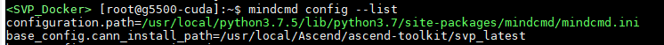
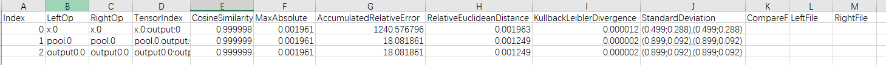

前言
前言
本文介绍如何使用MindCmd工具，以及如何通过工具进行一键推理、数据预处理、开源框架推理、模型压缩、模型转换、仿真推理、上板推理、精度比对、性能分析等功能。
与本文档相对应的产品版本如下。
须知：
MindCmd仅作为开发调试工具，不建议在实际产品中集成。
本文未有特殊说明，Hi3516DV500与Hi3519DV500、Hi3516CV608与Hi3516CV610内容完全一致。
本文档（本指南）主要适用于以下工程师：
- 算法工程师
- 技术支持工程师
- 软件开发工程师
在本文中可能出现下列标志，它们所代表的含义如下。


简介
MindCmd命令行工具主要关注一键化、自动化、聚焦部署侧的全流程开发效率的大幅提升。
针对网络模型的开发，MindCmd集成了离线模型转换工具、模型量化工具、模型精度比对工具、模型性能分析工具，提升了网络模型移植、分析和优化的效率。
功能框架图
如图1所示，工具目前包含数据预处理、开源框架推理、模型压缩、模型转换、功能仿真、指令仿真、性能仿真、上板推理、性能分析、精度比对以及Oneclick一键推理。

工具功能
MindCmd中主要几个功能特性如下：
- 一键推理：提供一键推理功能，一键式端到端执行数据预处理、开源框架推理、模型压缩、模型转换、功能仿真、指令仿真、性能仿真、上板推理、Dump、精度比对、性能分析等功能。参见“一键推理”。
- 数据预处理：提供数据预处理功能，在进行模型压缩、模型转换等功能之前通过数据预处理将数据处理成与模型匹配的数据。参见“数据预处理”。
- 开源框架推理：提供开源框架推理功能。获取Ground Truth数据。参见“开源框架推理”。
- 模型压缩：提供模型压缩功能，对模型的权重（weight）和数据（activation）进行低比特处理，让最终生成的网络模型更加轻量化，从而达到节省网络模型存储空间、降低传输时延、提高计算效率，达到性能提升与优化的目标，参见“模型压缩”。
- 模型转换：提供模型转换功能，将训练好的模型转换为离线模型，参见“模型转换”。
- 功能仿真：提供功能仿真推理功能，参见“应用工程”。
- 指令仿真：提供指令仿真推理功能，参见“应用工程”。
- 性能仿真：提供性能仿真推理功能，参见“应用工程”。
- 上板推理：提供上板推理功能，参见“应用工程”。
- 精度比对：提供精度比对功能，可以用来比对模型转换后SoC支持的算子运行结果与标准算子的运行结果，以便用来确认运算误差发生的原因，参见“精度比对”。
- 性能分析：提供性能分析功能，用于采集和分析SoC推理业务各个运行阶段的关键性能指标，参见“性能分析”。
- 工具模块：提供可单独调用的工具，包括原始Caffe模型子网导出、数据格式转换、模型Uninplace、ATC命令行转cfg文件，参见“Tools”。
安装
MindCmd软件包可以安装在Linux服务器上，可以使用Linux服务器上原生桌面自带的终端gnome-terminal进行安装，也可以在Windows服务器上通过SSH登录到Linux服务器进行安装。


MindCmd安装流程如图3所示。

软件包获取
说明：
本文UbuntuXX.XX-x86_64中的XX.XX为：
- 18.04（Hi3519DV500)
- 22.04（Hi3516CV610）
MindCmd工具只支持在XX.XX x86_64架构服务器安装。安装前，请先获取MindCmd工具软件包。
当前MindCmd工具的模型转换、模型推理依赖CANN软件包。模型压缩依赖AMCT软件包。具体说明请参见表1。
表 1 软件包说明
MindCmd工具主要用于端到端一键执行数据预处理、模型量化、模型转换、仿真推理、模型推理、精度比对和性能分析。各子模块支持单独调用，参见MindCmd子命令。 |
||
模型压缩工具（AMCT）为MindCmd工具提供网络模型量化的支持，让最终生成的网络模型更加轻量化，从而达到节省网络模型存储空间、降低传输时延、提高计算效率，达到性能提升与优化的目标。 |
||
hotwheels_amct_pytorch-<version>-py3-none-linux_x86_64.tar.gz |
其中_<version>_表示软件版本号。
安装前准备
UbuntuXX.XX-x86_64系统
安装MindCmd的环境，所要求的硬件以及操作系统要满足以下条件。
表 1 Ubuntu系统配套版本信息
|
|||
|
|||
|
|||
- 如果已安装Ascend-cann-toolkit开发套件包，请使用Ascend-cann-toolkit开发套件包的安装用户安装MindCmd。
- 如果未安装Ascend-cann-toolkit开发套件包，请参考如下示例准备安装用户。
您可以使用任意用户（含root或非root用户）进行安装。
- 若使用root用户安装，则不需要操作该章节，不需要对root用户做任何设置。
- 若使用已存在的非root用户安装，须保证该用户对$HOME目录具有读写以及可执行权限。
-
若使用新的非root用户安装，请参考如下步骤进行创建，如下操作请在root用户下执行。本手册以该种场景为例执行MindCmd的安装。
-
执行以下命令创建用户组和MindCmd安装用户并设置该用户的$HOME目录。
例如以MindCmdUser群组为例，可执行如下命令创建MindCmd安装用户并加入到群组中。
说明：
用户所属的属组必须和Driver运行用户所属组相同；如果不同，请用户自行添加到Driver运行用户属组。 -
执行以下命令设置密码。
_username_为安装MindCmd的用户名，该用户的umask值为0027：
- 若要查看umask的值，则执行命令：umask
-
若要修改umask的值，则执行命令：umask 新的取值
如果用户通过上述方式修改了umask取值，则修改后的取值只在当前窗口有效，用户也可以通过修改~/.bashrc文件方式设置永久umask取值：
-
在任意目录下执行如下命令，打开.bashrc文件：
在文件最后一行后面添加umask 新的取值内容。
-
执行:wq!命令保存文件并退出。
- 执行source ~/.bashrc命令使其立即生效。
-
-
安装过程需要下载相关依赖，请确保服务器能够连接网络。
请在root用户下执行如下命令检查源是否可用。
如果命令执行报错，则检查网络是否连接或者把/etc/apt/sources.list文件中的源更换为可用的源。
使用MindCmd工具前，需要完成相关环境搭建。开发人员可根据不同组件的使用需求进行环境搭建，使用一键推理，需要完整搭建各组件依赖的环境。
支持在Docker中使用MindCmd，解决方案提供了Dockerfile文件，构建镜像请参考《驱动和开发环境安装指南》“通过Dockerfile构建镜像”章节，启动容器请参考Docker容器中使用MindCmd。
表 2 各组件依赖
安装MindCmd
-
在MindCmd工具软件包所在目录下，执行如下命令安装。
-
若出现如下信息则说明工具安装成功。
用户可以在pythonX.X.X软件包所在路径下(例如：$HOME/.local/lib/pythonX.X.X/site-packages)查看已经安装的MindCmd工具，例如
drwxr-xr-x 9 mindcmd mindcmd 4096 Oct 13 23:16 mindcmd/ drwxr-xr-x 2 mindcmd mindcmd 4096 Oct 13 23:16 mindcmd-<version>.dist-info/其中，mindcmd即为MindCmd工具所在安装路径，下文中均用{MINDCMD_INSTALL_PATH}表示MindCmd安装路径。
说明：
卸载
用户通过如上方式成功安装MindCmd工具后，可执行如下命令卸载MindCmd工具。
若出现如下信息则说明卸载成功。
MindCmd工具升级时可以先卸载再重新安装：
如果安装过程中出现下载依赖连接超时的情况，请用户检查pip环境是否正常可用，如需网络代理或更换镜像源，请用户自行配置。
全局配置
MindCmd提供子命令查看和修改全局配置。
查看全局配置列表，结果如图1所示。


修改某一个配置项的值(以修改“base_config.cann_install_path”为例)，结果如图3所示：

mindcmd config 子命令不展示atc_args_append部分的配置参数，不支持在命令行修改atc_args_append的配置参数。
MindCmd命令行工具为用户提供全局配置文件，配置文件路径为：{MINDCMD_INSTALL_PATH}/mindcmd.ini，或通过运行命令 mindcmd config --list , 控制台会打印配置文件路径，如图4中高亮部分所示。

工具安装完毕后，需要在MindCmd全局配置文件中指定CANN软件包安装路径，如表1。
表 1 MindCmd配置
CANN软件包的安装路径，如：CANN_INSTALL_PATH=/home/user/Ascend/ascend-toolkit/<version>/ |
||||
默认工作空间，如：DEFAULT_WORKSPACE=/home/user/mindcmd_workspace 若DEFAULT_WORKSPACE=NA，则会在用户主目录下创建MindCmd-WorkSpace文件夹作为默认工作路径。 |
||||
上板推理默认配置文件，若需要执行上板推理，则需要配置此参数。详细配置项参考ssh.cfg文件配置。 |
||||
运行前先删除工作路径下一键推理的历史输出目录，默认值为1。 |
||||
模型压缩开关，默认值为1。 |
||||
开源框架推理开关，默认值为1。 |
||||
上板推理开关，默认值为0。 |
||||
功能仿真运行开关，默认值为1。 |
||||
指令仿真运行开关，默认值为0。 |
||||
性能仿真运行开关，默认值为0。 |
||||
Dump数据精度比对开关，默认值为1。 |
||||
AMCT PyTorch量化误差分析开关，默认值为0。具体功能描述及生成件参见《AMCT使用指南（PyTorch）》“量化误差分析”章节。 |
||||
在一键推理流程执行到ATC组件时，追加ATC支持的命令参数，每个命令按行隔开，具体命令参见《ATC工具使用指南》。需要满足key=value格式，工具会转换为--key=value。例如配置：log_level=0 |
- mindcmd.ini中的所有配置项前不可加空格。
- 参数值格式：支持大小写字母（a-z，A-Z）、数字（0-9）、下划线（_）、中划线（-）、句点（.）。
Sample介绍
工具内置一个PyTorch 模型pooling算子快速上手的用例，位于{MINDCMD_INSTALL_PATH}/testcase。请参考安装MindCmd完成安装，再参考全局配置完成MindCmd工具配置。
参考以下命令：
一键推理
功能介绍
支持一键式端到端完成模型的数据预处理、AMCT（模型压缩）、GT（Ground Truth）、ATC、仿真、上板推理、Dump、精度比对和Profiling功能。目前支持的开源框架模型包括：Caffe、PyTorch和ONNX。
AMCT子模块当前仅支持训练后量化（Post-Training Quantization）场景。
Caffe模型一键推理
Caffe模型一键推理流程如图1所示。

命令行格式说明
Caffe模型一键推理的命令行格式如下：
Caffe模型一键推理的命令行参数说明如表1所示。
表 1 Caffe模型一键推理命令行参数说明
指定权重文件（*.caffemodel）。未指定此参数时，工具将根据模型定义文件生成随机权重文件，位于模型定义文件所在路径下。 |
||
指定推理数据。支持图片列表（.txt）和feature map（.txt/.bin/.npy）格式。 工具根据传入路径参数后缀和文件内容区分图片列表或者feature map，具体规则如下：
多输入模型按照输入顺序指定，使用英文双引号""包含，并用英文分号;作为分割，如 --image_list="/home/MindCmdUser/image_list1.txt;/home/MindCmdUser/image_list2.txt"。 |
||
指定数据预处理配置文件，参见数据预处理配置文件样例。 |
||
指定推理数据的数据类型，只用于Feature map输入，不能用于图片输入。支持数据类型FP16, FP32, INT16, INT8, S16, S8, U16, U8, UINT16, UINT8。模型多路输入时，使用英文分号隔开，用英文双引号括住。eg.：--input_type="INT8;FP16"。 |
||
指定AMCT的简易量化配置文件(*.cfg)或量化配置文件(*.json)。配置方式请参考《AMCT使用指南（Caffe）》。 |
||
指定rpn文件（.txt），当模型包含rpn硬化层时，此参数要求必传，且AMCT和GT不执行。 指定多个rpn文件时使用英文双引号""包含，并用英文分号;作为分割，如 --rpndata="/home/MindCmdUser/rpn1.txt;/home/MindCmdUser/rpn2.txt"。 |
||
指定多batch模型的batch数量。多输入多batch模型只需指定较大的那个batch值。如双路输入的模型，其中一路支持32batch，一路不支持多batch，则输入 --batch_num=32。 |
||
指定工作目录，否则使用默认工作路径 $HOME/MindCmd-WorkSpace/XXX，XXX根据运行的模型动态生成。 如果开启了上板推理开关（IS_NPU_RUN=1），则工作目录不能超出ssh.cfg文件配置小节中“HOST_MOUNT_PATH”配置的路径。 |
||
指定板端ssh挂载配置文件。ssh挂载需先进行NFS环境搭建，可参考NFS环境搭建。 ssh挂载配置文件的模板，可参考ssh.cfg文件配置。 |
||
输入一个前缀${prefix}，用于删除${work_dir}/output/目录下所有名为“${prefix}_xxxxx”的文件夹。删除oneclick模块的历史输出目录。 例如：输入 --clean project 将会删除${work_dir}/output/目录下所有名为“project_xxxxx”的文件夹。 |
||
- 输入各参数的位置要求位于其所属子命令之后，例如：
- 参数值格式：支持大小写字母（a-z，A-Z）、数字（0-9）、下划线（_）、中划线（-）、句点（.）。
- 当-i/--image_list指定图片列表的时候，图片列表的内容支持UTF-8编码的中文路径。
- 多输入场景支持feature map和图片列表混输，eg. -i="${图片列表};${feature_map}"。
执行样例
-
模型和数据准备。
将推理所需的Caffe模型文件(.prototxt)、权重文件(.caffemodel)以及所需的数据等上传到开发环境任意路径，参考目录结构如下：
├── test_case │ ├── ssh.cfg # 可选，否则需要关闭上板推理 │ ├── caffe_resnet50 │ │ ├── resnet50.prototxt # 必选 │ │ └── resnet50.caffemodel # 可选，否则工具自动创建随机权重 │ ├── data # 可选，否则工具自动使用随机数推理 │ │ ├── dog1_1024_683.jpg │ │ ├── dog2_1024_683.jpg │ │ ├── insert_op.cfg # 数据预处理配置文件 │ │ └── image_ref_list.txt # 图片列表 说明：
- 推理数据的shape应该与模型所需输入数据的shape相同，如：模型resnet50的shape为（3，224，224），图片的shape也应为（3，224，224）。否则需要自定义数据预处理方式，通过--aipp参数指定数据预处理配置文件样例，数据预处理完整配置方式请参考《ATC工具使用指南》“--insert_op_conf ”章节。
- 当推理数据为图片且未指定数据预处理配置文件时，工具会自动将所有图片Resize成模型所需输入数据的shape。 -
选择一键推理场景
执行一键推理前在全局配置中配置一键推理场景开关
[oneclick_switch] # 是否清理当前工作目录下的历史输出结果 IS_CLEAN_PREVIOUS_OUTPUT=1 # 是否开启模型压缩 IS_AMCT_RUN=1 # 是否开启GT推理，支持Caffe、ONNX IS_GT_RUN=1 # 是否开启上板推理，开启需要配置[ssh](#p4659101195313) IS_NPU_RUN=0 # 是否开启功能仿真 IS_FUNC_RUN=1 # 是否开启指令仿真 IS_INST_RUN=0 # 是否开启性能仿真 IS_PERF_RUN=0 # 是否在模型推理时开启Dump网络中间结果，作用于功能仿真、指令仿真、上板推理 IS_DUMP_OPEN=1 # 是否开启Dump数据精度比对 IS_COMPARE_OPEN=1 # 是否开启上板性能数据采集 IS_BOARD_PROFILING_OPEN=1 # 是否在控制台展示性能数据报告 IS_PROFILE_DISPLAY_OPEN=0 # 是否使用AMCT PyTorch量化误差分析 IS_QUANT_ANALYSIS_OPEN=0 # 是否在控制台打印详细的执行日志 IS_PRINT_PROCESS_DETAIL=0 -
执行一键推理
执行以下命令进行一键推理：
-
执行结果
Caffe模型一键推理执行结束后会在工作路径下生成相应的文件，主要的目录结构如下：
├── work_space │ ├── bin # 可执行文件路径 │ ├── data │ │ ├── inference_data_XXX.txt # 图片数据/推理数据 │ │ ├── insert_op.cfg # aipp配置 │ ├── model # om离线模型保存路径 │ ├── output │ │ ├── project_XXX │ │ │ ├── amct # 模型压缩输出路径 │ │ │ ├── atc # 模型转换输出路径 │ │ │ ├── cmp # 精度比对结果保存路径 │ │ │ ├── dump # dump结果保存路径 │ │ │ │ ├── float # 原始模型浮点dump数据，用于精度比对 │ │ │ │ ├── fake_quant # 量化后模型dump数据，用于精度比对 │ │ │ │ ├── funcsim # 离线模型功能仿真dump数据，用于精度比对 │ │ │ │ │ └── trap │ │ │ │ ├── instsim # 离线模型指令仿真dump数据，用于精度比对 │ │ │ │ │ ├── layer │ │ │ │ │ └── trap │ │ │ │ └── npu # 离线模型上板推理dump数据，用于精度比对 │ │ │ │ │ └── trap │ │ │ ├── log # 一键推理执行日志所在文件夹 │ │ │ ├── profiling # 性能分析结果保存路径 │ │ │ └── preprocess # 数据预处理结果保存路径 │ │ └── latest_result # 最后一次执行的oneclick输出路径 │ ├── acl_dump_XXX.json # acl配置文件(下发dump配置) │ ├── acl_XXX.json # acl配置文件(下发release配置) │ ├── acl_profiling_XXX.json # acl配置文件(下发profiling配置) │ ├── acl_perfsim_XXX.json # acl配置文件(下发性能仿真配置) │ └── project.cfg # 工程参数配置文件 说明：
- 当IS_DUMP_OPEN值为0时，trap目录中只会保存模型尾层输出。
- 指令仿真的尾层输出会保存在layer目录中，且精度比对使用layer dump数据进行比对。不存在layer目录时使用trap进行比对。
- 当IS_PERF_RUN值为1，IS_INST_RUN值为0时，一键推理会将性能仿真的推理结果输出到指令仿真的目录${work_dir}/output/project_XXX/dump/instsim中。
PyTorch模型一键推理
PyTorch模型一键推理流程如图1所示。

命令行格式说明
PyTorch模型一键推理的命令行格式如下：
PyTorch模型一键推理的命令行参数说明如表1所示。
表 1 PyTorch模型一键推理命令行参数说明
指定模型输入的shape。多输入模型按照输入顺序指定，用英文分号作为分割，用英文双引号括住，如 --input_shape="1,3,224,224;1,3,224,224"。 |
||
指定推理数据。支持图片列表（.txt）和feature map（.txt/.bin/.npy）格式。 工具按照传入路径参数后缀和文件内容区分图片列表或者feature map，具体规则如下：
多输入模型按照输入顺序指定，使用英文双引号包含，并用英文分号作为分割，如 --image_list="/home/MindCmdUser/image_list1.txt;/home/MindCmdUser/image_list2.txt"。 当未指定此参数时，工具将根据--input_shape参数所指定的shape信息，生成随机数feature map作为输入数据并用于推理。 |
||
指定数据预处理配置文件，参考数据预处理配置文件样例。 |
||
指定待处理数据的数据类型，只用于Feature map输入，不能用于图片输入。支持数据类型FP16, FP32, INT16, INT8, S16, S8, U16, U8, UINT16, UINT8。指定多个输入数据类型时，使用英文分号隔开，用英文双引号括住。eg.：--input_type="INT8;FP16" |
||
指定AMCT的简易量化配置文件(*.yml，*.yaml)或量化配置文件(*.json)。配置方式请参考《AMCT使用指南（PyTorch）》“静态图简易量化配置功能说明”章节。 |
||
rpn文件（.txt），当模型包含rpn硬化层时，此参数要求必传，且不执行AMCT和GT。 指定多个rpn文件时使用英文双引号包含，并用英文分号作为分割，如 --rpndata="/home/MindCmdUser/rpn1.txt;/home/MindCmdUser/rpn2.txt"。 |
||
指定多batch模型的batch数量。多输入多batch模型只需指定较大的那个batch值。如双路输入的模型，其中一路支持32batch，一路不支持多batch，则输入 --batch_num=32。 |
||
指定工作目录，否则使用默认工作路径 $HOME/MindCmd-WorkSpace/XXX，XXX根据运行的模型动态生成。 如果开启了上板推理开关（IS_NPU_RUN=1），则工作目录不能超出ssh.cfg文件配置小节中HOST_MOUNT_PATH配置的路径。 |
||
指定板端ssh挂载配置文件。ssh挂载需先进行NFS环境搭建，可参考NFS环境搭建。 ssh挂载配置文件的模板，可参考ssh.cfg文件配置。 |
||
输入一个前缀${prefix}用于删除${work_dir}/output/目录下所有名为“${prefix}_xxxxx”的文件夹，删除oneclick模块的历史输出目录。 例如：输入 --clean project 将会删除${work_dir}/output/目录下所有名为“project_xxxxx”的文件夹。 |
||
- 输入各参数的位置要求位于其所属子命令之后，例如：
- 参数值格式：支持大小写字母（a-z，A-Z）、数字（0-9）、下划线（_）、中划线（-）、句点（.）。
- 当-i/--image_list指定图片列表的时候，图片列表的内容支持UTF-8编码的中文路径。
- 多输入场景支持featuremap和图片列表混输，eg. -i="${图片列表};${feature_map}"。
- PyTorch模型默认使用GPU进行推理，若需要指定具体GPU卡号可通过环境变量CUDA_VISIBLE_DEVICES配置，例如：
执行样例
-
模型和数据准备。
将推理所需的PyTorch模型文件以及所需的数据等上传到开发环境任意路径, 如/home/MindCmdUser/test_case，参考目录结构如下：
├── test_case │ ├── ssh.cfg # 可选，否则需要关闭上板推理 │ ├── pytorch_resnet50 │ │ ├── __init__.py │ │ ├── resnet.py # 必选 │ │ └── resnet50-19c8e357.pth │ ├── data # 可选，否则工具自动使用随机数推理 │ │ ├── dog1_1024_683.jpg │ │ ├── dog2_1024_683.jpg │ │ ├── insert_op.cfg │ │ └── image_ref_list.txt配置PYTHONPATH环境变量：
说明：
- 推理数据的shape应该与模型所需输入数据的shape相同，如：模型resnet50的shape为（3， 224， 224），图片的shape也应为（3， 224， 224）。否则需要自定义数据预处理方式，通过--aipp参数指定数据预处理配置文件样例，数据预处理完整配置方式请参考《ATC工具使用指南》“--insert_op_conf ”章节。
- 当推理数据为图片且未指定数据预处理配置文件时，工具会根据--input_shape参数值，将所有图片Resize成模型所需输入数据的shape。 -
选择一键推理场景
执行一键推理前可以在mindcmd.ini文件中配置一键推理开关[oneclick_switch]
[oneclick_switch] # 是否清理当前工作目录下的历史输出结果 IS_CLEAN_PREVIOUS_OUTPUT=0 # 是否开启模型压缩 IS_AMCT_RUN=1 # 是否开启GT推理，支持Caffe、ONNX IS_GT_RUN=1 # 是否开启上板推理，开启需要配置[ssh](#p1464812310553) IS_NPU_RUN=0 # 是否开启功能仿真 IS_FUNC_RUN=1 # 是否开启指令仿真 IS_INST_RUN=0 # 是否开启性能仿真 IS_PERF_RUN=0 # 是否在模型推理时开启Dump网络中间结果，作用于功能仿真、指令仿真、上板推理 IS_DUMP_OPEN=1 # 是否开启Dump数据精度比对 IS_COMPARE_OPEN=1 # 是否开启上板性能数据采集 IS_BOARD_PROFILING_OPEN=1 # 是否在控制台展示性能数据报告 IS_PROFILE_DISPLAY_OPEN=0 # 是否使用AMCT PyTorch量化误差分析 IS_QUANT_ANALYSIS_OPEN=0 # 是否在控制台打印详细的执行日志 IS_PRINT_PROCESS_DETAIL=0 -
执行一键推理
执行以下命令进行一键推理：
-
执行结果
PyTorch模型一键推理执行结束后会在工作路径下生成相应的文件，主要的目录结构如下：
├── work_space │ ├── bin # 可执行文件路径 │ ├── data │ │ ├── inference_data_XXX.txt # 推理数据 │ │ ├── insert_op.cfg # aipp配置 │ ├── model # om离线模型保存路径 │ ├── output │ │ ├── project_XXX │ │ │ ├── amct # 模型压缩输出路径 │ │ │ ├── atc # 模型转换输出路径 │ │ │ ├── cmp # 精度比对结果保存路径 │ │ │ ├── dump # dump结果保存路径 │ │ │ │ ├── float # 原始模型浮点dump数据，用于精度比对 │ │ │ │ ├── fake_quant # 量化后模型假量化dump数据，用于精度比对 │ │ │ │ ├── real_quant # 量化后模型真量化dump数据，用于精度比对 │ │ │ │ ├── funcsim # 离线模型功能仿真dump数据，用于精度比对 │ │ │ │ │ └── trap │ │ │ │ ├── instsim # 离线模型指令仿真dump数据，用于精度比对 │ │ │ │ │ ├── layer │ │ │ │ │ └── trap │ │ │ │ └── npu # 离线模型上板推理dump数据，用于精度比对 │ │ │ │ │ └── trap │ │ │ ├── log # 一键推理执行日志所在文件夹 │ │ │ ├── profiling # 性能分析结果保存路径 │ │ │ └── preprocess # 数据预处理结果保存路径 │ │ └── latest_result # 最后一次执行的oneclick输出路径 │ ├── acl_XXX.json # acl配置文件(下发release配置) │ ├── acl_dump_XXX.json # acl配置文件(下发dump配置) │ ├── acl_profiling_XXX.json # acl配置文件(下发profiling配置) │ ├── acl_perfsim_XXX.json # acl配置文件(下发性能仿真配置) │ └── project.cfg # 工程参数配置文件 说明：
- 当IS_DUMP_OPEN值为0时，trap目录中只会保存尾层输出。
- 指令仿真的尾层输出会保存在layer目录中，且精度比对使用layer dump数据进行比对。不存在layer目录时使用trap进行比对。
- 当IS_PERF_RUN值为1，IS_INST_RUN值为0时，一键推理会将性能仿真的推理结果输出到指令仿真的目录${work_dir}/output/project_XXX/dump/instsim中。
量化后模型一键推理
工具支持传入量化后的权重文件和量化配置文件执行量化后模型一键推理，流程如图1所示。命令行格式如下：
mindcmd oneclick pytorch -m MODEL -w WEIGHT -i IMAGE_LIST --input_shape INPUT_SHAPE --quant_config QUANT_CONFIG

当且仅当同时输入量化后的权重文件和量化配置文件时，才会执行量化后模型一键推理。
硬件感知一键推理
工具支持硬件感知一键推理流程，流程如图1所示。命令行格式如下：

当参数--quant_config传入量化配置文件（*.json）时，不会执行硬件感知一键推理。
ONNX模型一键推理
ONNX模型一键推理流程如图1所示。

命令行格式说明
ONNX模型一键推理的命令行格式如下：
ONNX模型一键推理的命令行参数说明如表1所示。
表 1 ONNX模型一键推理命令行参数说明
指定推理数据。支持图片列表（.txt）和feature map（.txt/.bin/.npy）格式。 工具按照传入路径参数后缀和文件内容区分图片列表或者feature map，具体规则如下：
多输入模型按照输入顺序指定，使用双引号""包含，并用英文分号;作为分割，如 --image_list="/home/MindCmdUser/image_list1.txt;/home/MindCmdUser/image_list2.txt"。 |
||
指定数据预处理配置文件，参考数据预处理配置文件样例。 |
||
指定待处理数据的数据类型，只用于Feature map输入，不能用于图片输入。支持数据类型FP16, FP32, INT16, INT8, S16, S8, U16, U8, UINT16, UINT8。指定多个输入数据类型时，使用英文分号隔开，用双引号括住。eg.：--input_type="INT8;FP16" |
||
rpn文件（.txt），当模型包含rpn硬化层时，此参数要求必传，且不执行AMCT和GT。指定多个rpn文件时使用英文双引号""包含，并用英文分号;作为分割，如 --rpndata="/home/MindCmdUser/rpn1.txt;/home/MindCmdUser/rpn2.txt"。 |
||
指定多batch模型的batch数量。多输入多batch模型只需指定较大的那个batch值。如双路输入的模型，其中一路支持32batch，一路不支持多batch，则输入 --batch_num=32。 |
||
指定工作目录，否则使用默认工作路径 $HOME/MindCmd-WorkSpace/XXX，XXX根据运行的模型动态生成。 如果开启了上板推理开关（IS_NPU_RUN=1），则工作目录不能超出ssh.cfg文件配置小节中HOST_MOUNT_PATH配置的路径。 |
||
指定板端ssh挂载配置文件。ssh挂载需先进行NFS环境搭建，可参考NFS环境搭建。 ssh挂载配置文件的模板，可参考ssh.cfg文件配置。 |
||
输入一个前缀${prefix}用于删除${work_dir}/output/目录下所有名为“${prefix}_xxxxx”的文件夹，删除oneclick模块的历史输出目录。 例如：输入 --clean project 将会删除${work_dir}/output/目录下所有名为“project_xxxxx”的文件夹。 |
||
- 输入各参数的位置要求位于其所属子命令之后，例如：
- 参数值格式：支持大小写字母（a-z，A-Z）、数字（0-9）、下划线（_）、中划线（-）、句点（.）。
- 当-i/--image_list指定图片列表的时候，图片列表的内容支持UTF-8编码的中文路径。
- 多输入场景支持feature map和图片列表混输，eg. -i="${图片列表};${feature_map}"。
- ONNX模型仅支持使用CPU进行推理。
执行样例
-
模型和数据准备。
将推理所需的ONNX模型文件以及所需的数据等上传到开发环境任意路径，参考目录如下：
├── test_case │ ├── ssh.cfg # 可选，否则需要关闭上板推理 │ ├── onnx_resnet50 │ │ └── resnet50.onnx # 必选 │ ├── data # 可选，否则工具自动使用随机数推理 │ │ ├── dog1_1024_683.jpg │ │ ├── dog2_1024_683.jpg │ │ ├── insert_op.cfg │ │ └── image_ref_list.txt 说明：
- 推理数据的shape应该与模型所需输入数据的shape相同，如：模型resnet50的shape为（3， 224， 224），图片的shape也应为（3， 224， 224）。否则需要自定义数据预处理方式，通过--aipp参数指定数据预处理配置文件样例，数据预处理完整配置方式请参考《ATC工具使用指南》“--insert_op_conf ”章节。
- 当推理数据为图片且未指定数据预处理配置文件时，工具会将所有图片Resize成模型所需输入数据的shape大小。 -
选择一键推理场景
执行一键推理前可以在mindcmd.ini文件中配置一键推理开关[oneclick_switch]
[oneclick_switch] # 是否清理当前工作目录下的历史输出结果 IS_CLEAN_PREVIOUS_OUTPUT=0 # 是否开启模型压缩 IS_AMCT_RUN=1 # 是否开启GT推理，支持Caffe、ONNX IS_GT_RUN=1 # 是否开启上板推理，开启需要配置[ssh](#p771510374481) IS_NPU_RUN=0 # 是否开启功能仿真 IS_FUNC_RUN=1 # 是否开启指令仿真 IS_INST_RUN=0 # 是否开启性能仿真 IS_PERF_RUN=0 # 是否在模型推理时开启Dump网络中间结果，作用于功能仿真、指令仿真、上板推理 IS_DUMP_OPEN=1 # 是否开启Dump数据精度比对 IS_COMPARE_OPEN=1 # 是否开启上板性能数据采集 IS_BOARD_PROFILING_OPEN=1 # 是否在控制台展示性能数据报告 IS_PROFILE_DISPLAY_OPEN=0 # 是否使用AMCT PyTorch量化误差分析 IS_QUANT_ANALYSIS_OPEN=0 # 是否在控制台打印详细的执行日志 IS_PRINT_PROCESS_DETAIL=0 -
执行一键推理
执行以下命令进行一键推理：
-
执行结果
ONNX模型一键推理执行结束后会在工作路径下生成相应的文件，主要的目录结构如下：
├── work_space │ ├── bin # 可执行文件路径 │ ├── data │ │ ├── inference_data_XXX.txt # 推理数据 │ │ ├── insert_op.cfg # aipp配置 │ ├── model # om离线模型保存路径 │ ├── output │ │ ├── project_XXX │ │ │ ├── atc # 模型转换输出路径 │ │ │ ├── cmp # 精度比对结果保存路径 │ │ │ ├── dump # dump结果保存路径 │ │ │ │ ├── float # 原始模型浮点dump数据，用于精度比对 │ │ │ │ ├── funcsim # 离线模型功能仿真dump数据，用于精度比对 │ │ │ │ │ └── trap │ │ │ │ ├── instsim # 离线模型指令仿真dump数据，用于精度比对 │ │ │ │ │ ├── layer │ │ │ │ │ └── trap │ │ │ │ ├── atc_fake_quant # ATC量化dump数据，用于精度比对 │ │ │ │ └── npu # 离线模型上板推理dump数据，用于精度比对 │ │ │ │ │ └── trap │ │ │ ├── log # 一键推理执行日志所在文件夹 │ │ │ ├── profiling # 性能分析结果保存路径 │ │ │ └── preprocess # 数据预处理结果保存路径 │ │ └── latest_result # 最后一次执行的oneclick输出路径 │ ├── acl_dump_XXX.json # acl配置文件(下发dump配置) │ ├── acl_XXX.json # acl配置文件(下发release配置) │ ├── acl_profiling_XXX.json # acl配置文件(下发profiling配置) │ ├── acl_perfsim_XXX.json # acl配置文件(下发性能仿真配置) │ └── project.cfg # 工程参数配置文件 说明：
- 当IS_DUMP_OPEN值为0时，trap目录中只会保存尾层输出。
- 指令仿真的尾层输出会保存在layer目录中，且精度比对使用layer dump数据进行比对。不存在layer目录时使用trap进行比对。
- 当IS_PERF_RUN值为1，IS_INST_RUN值为0时，一键推理会将性能仿真的推理结果输出到指令仿真的目录${work_dir}/output/project_XXX/dump/instsim中。
Deployed模型一键推理
针对单独调用AMCT PTQ或QAT生成的定点模型流程如图1所示。

Deployed模型的一键推理命令格式请参考：Caffe模型一键推理、PyTorch模型一键推理和ONNX模型一键推理。
数据预处理
功能介绍
此功能对数据进行预处理，生成AMCT/ATC/仿真/上板的推理数据（.npy 和 .bin格式）。
当前支持图像裁剪（crop）、图像边缘填充（padding）、图像缩放（resize）、色域转换、通道数据交换、减均值、乘系数。
命令行格式说明
数据预处理命令行格式如下：
命令行参数说明如表1 所示
表 1 数据预处理命令行参数说明
- 参数值格式：支持大小写字母（a-z，A-Z）、数字（0-9）、下划线（_）、中划线（-）、句点（.）。
- 当-i/--image_list指定图片列表的时候，图片列表的内容支持UTF-8编码的中文路径。
- 多输入场景支持feature map和图片列表混输，eg. -i="${图片列表};${feature_map}"。
执行样例
-
模型和数据准备。
需要进行预处理的数据可进行如下准备：
-
执行数据预处理
执行以下命令进行数据预处理：
-
数据预处理执行结束后会在指定输出路径下生成数据，主要目录结构如下：
├── preprocess_output │ ├── calibration_dataset # 校准数据集 │ │ ├── bin # bin格式数据 │ │ │ └── input_0_dog1_shape_1_3_224_224_FP32.bin │ │ ├── npy # npy格式数据 │ │ │ └── input_0_dog1_shape_1_3_224_224_FP32.npy │ │ └── original # 原始输入数据 │ │ │ └── dog1.jpg │ ├── validation_dataset # 验证数据集 │ │ ├── bin # bin格式数据 │ │ │ └── input_0_dog2_bgr_planar_shape_1_3_224_224_U8.bin │ │ ├── npy # npy格式数据 │ │ │ └── input_0_dog2_shape_1_3_224_224_FP32.npy │ │ └── original # 原始输入数据 │ │ │ └── dog2.jpg │ ├── input_format # 按input_format解析的原始输入数据 │ ├── input0_calibration_npy_FP32.txt # 保存了npy格式校准数据的路径 │ ├── input0_validation_bin_FP32.txt # 保存了bin格式验证数据的路径 │ ├── input0_validation_npy_FP32.txt # 保存了npy格式验证数据的路径 │ └── insert_op.cfg # 数据预处理配置文件 说明：
- 当用户传入的-i/--image_list有多组数据且每组的数据个数不等时，MindCmd将采用最小的数据个数作为预处理操作的图片个数。示例：
如果pic1.txt中有4张图片，pic2.txt中有2张图片，那么MindCmd执行预处理时pic1.txt中的最后两张图片不会被处理，以保证每路输入的数据个数是相同的。
- 关于校准数据集和验证数据集的说明：
如果输入为N张图片，那么MindCmd将使用前N-1张数据作为校准集数据，第N张图片作为验证集数据（当只有一张图片时，该图片既作为校准集数据，也作为验证集数据）。
- 预处理的输出生成件命名与实际配置的insert_op相关，上述执行结果中的示例仅供参考，生成件文件名描述的shape、input_format等以实际配置为准。
开源框架推理
功能介绍
该功能支持开源框架(Caffe/ONNX)推理，生成的dump数据可用于精度比对。
Caffe模型推理
命令行格式说明
Caffe模型推理的命令行格式如下：
命令行参数说明如表1所示
表 1 Caffe模型推理命令行参数说明
指定Caffe模型的权重文件（.caffemodel）路径，未指定将根据-m/--model参数指定的模型定义文件生成随机权重文件，位于-o/--output指定的数据输出路径下。 |
||
执行推理模型所需的数据集（.txt）。txt文件内要求为.npy、.bin或者.txt格式的feature map推理数据，每行定义一条推理数据的路径。 |
||
- 参数值格式：支持大小写字母（a-z，A-Z）、数字（0-9）、下划线（_）、中划线（-）、句点（.）。
- 当-i/--image_list指定图片列表的时候，图片列表的内容支持UTF-8编码的中文路径。
执行样例
-
数据准备
执行开源框架前需要提前准备推理数据(参考“数据预处理”)，参考文件结构如下：
-
执行模型推理
执行以下命令进行模型推理：
-
执行结果
执行结束后会在指定输出路径中生成Ground Truth dump数据，主要文件结构示例如下：
ONNX模型推理
命令行格式说明
ONNX模型推理的命令行格式如下：
命令行参数说明如表1所示
表 1 ONNX模型推理命令行参数说明
- 参数值格式：支持大小写字母（a-z，A-Z）、数字（0-9）、下划线（_）、中划线（-）、句点（.）。
- 当-i/--image_list指定图片列表的时候，图片列表的内容支持UTF-8编码的中文路径。
执行样例
-
数据准备
执行开源框架前需要提前准备推理数据(处理方法参考“数据预处理”)，参考文件结构如下：
-
执行模型推理
执行以下命令进行模型Ground Truth推理：
-
执行结果
执行结束后会在指定输出路径中生成Ground Truth dump数据，主要文件结构示例如下：
模型压缩
功能介绍
该功能支持对开源框架(Caffe/PyTorch)的模型压缩，从而达到节省网络模型存储空间、降低传输时延、提高计算效率，达到性能提升与优化的目标。
Caffe模型压缩
命令行格式说明
Caffe模型压缩的命令行格式如下：
Caffe模型压缩的命令行参数说明如表1所示
表 1 Caffe模型压缩命令行参数说明
Caffe模型的权重文件（ .caffemodel）路径。未指定将根据-m/--model参数指定的模型定义文件生成随机权重文件，位于模型定义文件所在路径下。 |
||
指定AMCT的简易量化配置文件(*.cfg)或量化配置文件(*.json)。配置方式请参考《AMCT使用指南（Caffe）》。 说明：
通过--quant_config可以先对模型进行调试，符合预期后将量化的deployed模型使用Caffe模型一键推理部署。 |
||
- 参数值格式：支持大小写字母（a-z，A-Z）、数字（0-9）、下划线（_）、中划线（-）、句点（.）。
- 当-i/--image_list指定图片列表的时候，图片列表的内容支持UTF-8编码的中文路径。
执行样例
-
模型和数据准备。
将需要进行模型压缩的Caffe模型文件(.prototxt)、权重文件(.caffemodel)以及所需的数据(feature_map)等上传到服务器工作路径，参考目录结构如下：
-
执行模型压缩
执行以下命令进行模型压缩：
-
执行结果
Caffe模型压缩执行结束后会在输出路径下生成相应的文件，主要文件结构示例如下：
├── amct_output │ ├── resnet50_tmp │ ├── amct_log │ │ └── amct_caffe.log │ ├── resnet50_config.json │ ├── resnet50_deploy_model.prototxt │ ├── resnet50_deploy_weights.caffemodel │ ├── resnet50_fake_quant_model.prototxt │ ├── resnet50_fake_quant_weights.caffemodel │ ├── resnet50_quant.json │ ├── resnet50_quant_param_record.bin │ ├── resnet50_quant_param_record.txt │ └── resnet50_uninplace.prototxt对应文件的描述如表1所示：
表 1 Caffe模型压缩结果文件描述
PyTorch模型压缩
命令行格式说明
PyTorch模型压缩的命令行格式如下：
PyTorch模型压缩的命令行参数说明如表1所示。
表 1 PyTorch模型压缩命令行参数说明
指定模型的shape。多输入模型按照输入顺序指定，用分号;作为分割，用双引号括住，如 --input_shape="1,3,224,224;1,3,224,224"。 当未指定-i, --image_list参数时，此参数要求必传，工具将根据输入的shape信息生成随机数feature map，位于-o, --output指定的数据输出路径下。 |
||
|
工具以简易量化配置文件(*.yml, *.yaml)或量化配置文件(*.json)中的batch_num为准，不推荐通过该参数配置。 |
||
指定AMCT的简易量化配置文件(*.yml, *.yaml)或量化配置文件(*.json)。配置方式请参考《AMCT使用指南（PyTorch）》“静态图简易量化配置功能说明”章节。 说明：
通过--quant_config可以先对模型进行调试，符合预期后将量化的deployed模型使用oneclick部署。 |
||
- 参数值格式：支持大小写字母（a-z，A-Z）、数字（0-9）、下划线（_）、中划线（-）、句点（.）。
- 当-i/--image_list指定图片列表的时候，图片列表的内容支持UTF-8编码的中文路径。
执行样例
-
模型和数据准备。
将需要进行模型压缩的PyTorch模型文件以及所需的数据(.npy)等上传到服务器工作路径，如/home/MindCmdUser/test_case，参考目录结构如下：
├── test_case │ ├── pytorch_resnet50 │ │ ├── __pycache__ │ │ ├── __init__.py │ │ ├── resnet.py │ │ └── resnet50-19c8e357.pth │ ├── data │ │ ├── data_dog1_shape_1_3_224_224_float32.npy │ │ ├── data_dog2_shape_1_3_224_224_float32.npy │ │ └── image_ref_list.txt配置PYTHONPATH环境变量：
-
执行模型压缩
执行以下命令进行模型压缩：
-
执行结果
PyTorch模型压缩执行结束后会在指定输出路径下生成相应的文件，主要文件结构示例如下：
├── amct_output │ ├── tmp │ ├── amct_log │ │ └── hotwheels.amct_pytorch.log │ ├── resnet50_deploy_model.onnx │ ├── resnet50_calibration.pt │ └── resnet50_quant_param_record.txt对应文件的描述如表1所示。
表 1 模型压缩结果文件描述
resnet50_quant_param_record.txt
模型转换
功能介绍
该功能将开源框架模型(Caffe/ONNX)转换成图像分析引擎支持的离线模型，模型转换过程中可以实现算子调度的优化、权值数据重排、内存使用优化等，可以脱离设备完成模型的预处理。
命令行格式说明
模型转换功能的命令行格式如下：
命令行参数说明如表1所示。
表 1 模型转换命令行参数说明
参数值格式：支持大小写字母（a-z，A-Z）、数字（0-9）、下划线（_）、中划线（-）、句点（.）。
执行样例
-
数据准备
执行模型转换前需准备相应的模型和数据(以Caffe模型为例)，其文件结构如下：
-
执行模型转换
执行以下命令进行模型转换：
cd atc_resource mindcmd atc -a --model=./caffe_resnet50/resnet50.prototxt --weight=./caffe_resnet50/resnet50.caffemodel --image_list="data:./data/dog1_1024_683.bin" --output=./atc_output/resnet50 --input_type="data:U8" 说明：
以上执行示例中--image_list参数和--input_type的参数值开头的“data”为网络首层节点名称，请根据网络实际情况进行替换。 -
执行结果
模型转换执行结束后会在指定输出路径中生成数据，主要文件结构示例如下：
├── atc_output │ ├── atc_perf.csv # 预估模型在板端运算时实际计算量 │ ├── calibration_param.txt # 模型使用的量化参数 │ ├── cnn_net_tree.dot # 网络优化后的算子信息 │ ├── cnn_net_tree_adapt.dot # 网络适配后的算子信息 │ ├── cnn_net_tree_after_tiling_seg_0.dot # 网络深度融合后的算子信息 │ ├── cnn_net_tree_org.dot │ ├── cnn_net_tree_parser.dot # 原始模型解析后的算子信息 │ ├── cnn_net_tree_shape5d_seg_0.dot │ ├── resnet50.om # 转换后的模型文件 │ └── mapper_debug.log # 转换模型的调试日志
应用工程
功能介绍
提供应用工程功能仿真、指令仿真、性能仿真、上板推理、Dump中间结果和Profiling功能。
- 功能仿真：从功能一致性的角度去模拟硬件，速度较快。
- 指令仿真：从指令一致性的角度去模拟硬件，速度较慢。
- 性能仿真：在指令仿真的基础上，增加时序方面的模拟，对模型的推理性能进行估算，速度较慢，仅支持模拟统计单段AI Core网络的性能且不 支持Dump， 对于sort/nms/filter 相关层只能体现数据量的性能差异，体现不了数值上引起的性能差异，建议以板端Profiling数据为准。
功能仿真
命令行格式说明
功能仿真的命令行格式如下：
命令行参数说明如表1所示。
- 命令行中的app、funcsim、dump子命令存在父子关系，因此输入需满足先后顺序。
- 功能仿真要求输入的om模型在经过ATC模型转换时已经设置了--save_original_model=true。
表 1 功能仿真命令行参数说明
指定工作路径，否则使用表1中配置的默认工作路径。 |
||
指定Recurrent网络（包含LSTM/RNN/GRU层）每一句话的最大帧数，用于板端运行时分配输入内存。与-b互斥。 |
||
指定rpn文件（.txt），当模型包含rpn硬化层时，此参数要求必传，且不执行AMCT和GT。 指定多个rpn文件时使用双引号""包含，并用分号;作为分割，如 --rpndata="/home/MindCmdUser/rpn1.txt;/home/MindCmdUser/rpn2.txt"。 |
||
指定推理结果存放路径，默认为 ${work_dir}/dump。当同时指定dump子命令中的--output命令时，以dump子命令的--output为准。 |
||
dump开关，如果指定此子命令表示开启dump，将根据-m/--om指定的离线模型文件生成包含dump配置的acl.json文件。默认关闭dump功能。 |
||
指定想要dump的层。如果指定多层，请使用空格作为分割 eg. --dump_list conv1 pool1。不指定--dump_list时，默认dump所有层。 |
||
- 参数值格式：支持大小写字母（a-z，A-Z）、数字（0-9）、下划线（_）、中划线（-）、句点（.）。
- 当-i/--image_list指定图片列表的时候，图片列表的内容支持UTF-8编码的中文路径。
执行样例
-
模型和数据准备
参考目录结构如下：
-
配置默认工作路径（可选）
使用mindcmd.ini文件[base_config] section 下配置的默认工作路径，或通过命令行参数-k/--work_dir指定工作路径
-
执行功能仿真
执行以下命令完成功能仿真：
-
执行结果
功能仿真执行结果保存在工作路径下，主要目录结构示例如下：
指令仿真
命令行格式说明
指令仿真的命令行格式如下：
命令行参数说明如表1所示。
命令行中的app、instsim、dump子命令存在父子关系，因此输入需满足先后顺序。
表 1 指令仿真命令行参数说明
指定工作路径，否则使用表1中配置的默认工作路径。 |
||
指定Recurrent网络（包含LSTM/RNN/GRU层）每一句话的最大帧数，用于板端运行时分配输入内存。与-b互斥。 |
||
指定rpn文件（.txt），当模型包含rpn硬化层时，此参数要求必传，且不执行AMCT和GT。 指定多个rpn文件时使用双引号""包含，并用分号;作为分割，如 --rpndata="/home/MindCmdUser/rpn1.txt;/home/MindCmdUser/rpn2.txt"。 |
||
指定推理结果存放路径，默认为 ${work_dir}/dump。当同时指定dump子命令中的--output命令时，以dump子命令的--output为准。/ |
||
dump开关，如果指定此子命令表示开启dump，将根据-m/--om指定的离线模型文件生成包含dump配置的acl.json文件。默认关闭dump功能。 |
||
指定想要dump的层。如果指定多层，请使用空格作为分割 eg. --dump_list conv1 pool1。不指定--dump_list时，默认dump所有层。 |
||
- 参数值格式：支持大小写字母（a-z，A-Z）、数字（0-9）、下划线（_）、中划线（-）、句点（.）。
- 当-i/--image_list指定图片列表的时候，图片列表的内容支持UTF-8编码的中文路径。
执行样例
-
模型和数据准备
参考目录结构如下：
-
配置默认工作路径（可选）
使用mindcmd.ini文件[base_config] section 下配置的默认工作路径，或通过命令行参数-k/--work_dir指定工作路径。
-
执行指令仿真
执行以下命令进行指令仿真：
-
执行结果
指令仿真执行结果保存在工作路径下，主要目录结构示例如下：
性能仿真
命令行格式说明
性能仿真的命令行格式
命令行参数说明如表1所示
命令行中的app、perfsim、--ddr子命令存在父子关系，因此输入需满足先后顺序。
表 1 性能仿真命令行参数说明
指定工作路径，否则使用表1中配置的默认工作路径。 |
||
指定Recurrent网络（包含LSTM/RNN/GRU层）每一句话的最大帧数，用于板端运行时分配输入内存。与-b互斥。 |
||
指定rpn文件（.txt），当模型包含rpn硬化层时，此参数要求必传，且不执行AMCT和GT。 指定多个rpn文件时使用双引号""包含，并用分号;作为分割，如 --rpndata="/home/MindCmdUser/rpn1.txt;/home/MindCmdUser/rpn2.txt"。 |
||
指定性能仿真结果存放路径，默认将性能结果输出到 ${work_dir}/profiling中，将推理结果输出到${work_dir}/dump中。 |
||
指定 ddr_r_latency 的值，即模拟读指令的时候，发生Cache Miss的场景下，需要额外等待的Cycle数，默认为100，取值范围 [1, 1000000000]。 |
- 性能仿真不支持dump，因此进行性能仿真的om模型需为不配置dump的模型，参见《ATC工具使用指南》"3.3.1.2 --online_model_type" 中关于配置dump的描述。
- 参数值格式：支持大小写字母（a-z，A-Z）、数字（0-9）、下划线（_）、中划线（-）、句点（.）。
- 当-i/--image_list指定图片列表的时候，图片列表的内容支持UTF-8编码的中文路径。
执行样例
-
模型和数据准备
参考目录结构如下：
-
配置默认工作路径（可选）
使用mindcmd.ini文件[base_config] section 下配置的默认工作路径，或通过命令行参数-k/--work_dir指定工作路径。
-
执行性能仿真
执行以下命令进行性能仿真：
-
执行结果
性能仿真执行结果保存在工作路径下，主要目录结构示例如下：
上板推理
命令行格式说明
上板推理的命令行格式如下：
命令行参数说明如表1所示。
命令行中的app、npu、{dump，profile}子命令存在父子关系，因此输入需满足先后顺序。
表 1 上板推理命令行参数说明
指定工作路径，否则使用表1中配置的默认工作路径。上板推理要求工作路径必须在HOST_MOUNT_PATH下。 |
||
指定Recurrent网络（包含LSTM/RNN/GRU层）每一句话的最大帧数，用于板端运行时分配输入内存。与-b互斥。 |
||
指定rpn文件（.txt），当模型包含rpn硬化层时，此参数要求必传，且不执行AMCT和GT。 指定多个rpn文件时使用双引号""包含，并用分号;作为分割，如 --rpndata="/home/MindCmdUser/rpn1.txt;/home/MindCmdUser/rpn2.txt"。 |
||
指定板端ssh挂载配置文件。ssh挂载需先进行NFS环境搭建，可参考NFS环境搭建。 ssh挂载配置文件的模板，可参考ssh.cfg文件配置。 |
||
指定推理结果存放路径，默认为 ${work_dir}/dump。当同时指定子命令中的--output命令时，以子命令的--output为准。 |
||
上板dump模型中间结果开关，与profile互斥。如果指定此子命令表示开启dump，将根据-m/--om指定的离线模型文件生成包含dump配置的acl.json文件。默认关闭dump功能。 |
||
上板Profiling数据采集开关，与dump互斥。如果指定此子命令表示开启Profiling，将根据-m/--om指定的离线模型文件生成包含Profiling配置的acl.json文件。默认关闭Profiling功能。 |
||
指定想要dump的层。如果指定多层，请使用空格作为分割 eg. --dump_list conv1 pool1。不指定--dump_list时，默认dump所有层。 |
||
- 参数值格式：支持大小写字母（a-z，A-Z）、数字（0-9）、下划线（_）、中划线（-）、句点（.）。
- 当-i/--image_list指定图片列表的时候，图片列表的内容支持UTF-8编码的中文路径。
执行样例
-
模型和数据准备
参考目录结构如下：
-
配置默认工作路径（可选）
使用全局配置文件[base_config] section 下配置的默认工作路径，或通过命令行参数-k/--work_dir指定工作路径。
-
准备ssh.cfg文件，参考ssh.cfg文件配置
ssh.cfg文件配置优先级如下：-s/--ssh_config参数配置 > mindcmd.ini中的全局配置（SSH_CFG_PATH）。
-
执行上板推理（以开启dump为例）
执行以下命令进行上板推理：
-
执行结果
上板推理结果保存在工作路径下，主要目录结构示例如下：
精度比对
功能介绍
该功能将自有模型算子的运算结果与标准算子的运算结果进行比对，以便确认误差发生的算子，目前提供的比对指标有：余弦相似度、最大绝对误差、累计相对误差、相对欧几里德距离、KL散度、标准偏差等。
命令行格式说明
精度比对的命令行格式如下：
命令行参数说明如表1所示。
表 1 精度比对命令行参数说明
参数值格式：支持大小写字母（a-z，A-Z）、数字（0-9）、下划线（_）、中划线（-）、句点（.）。
精度比对场景
在mindcmd一键推理中，精度比对按照Ground Truth、Fake Quant、Real Quant、Function Simulator、Instruction Simulator、NPU的顺序，将不同场景下的推理数据进行两两比对。
表 1 精度比对数据说明
由于模型压缩和模型转换的过程中对模型进行了优化，包括算子消除、算子融合、算子拆分等操作。可能导致整网比对时找不到正确的文件进行比对。因此，部分场景需要额外传入离线模型文件和量化融合规则文件。具体场景如表2所示。
表 2 精度比对场景
执行样例
-
dump数据准备
参考目录结构如下：
-
执行精度比对
执行以下命令进行精度比对：
-
执行结果
精度比对执行结束后会在指定输出路径中生成对应csv文件，主要文件结构示例如下：
文件内容如图1所示数据，参数说明请参考《精度比对工具使用指南》。
控制台会展示精度比对简易的执行结果，如图2。


-
比对数据准备
精度比对数据可以通过一键推理生成，以工具内置的模型为例：
-
开启一键推理dump配置。
-
开启开源框架推理、模型压缩、功能仿真、性能仿真、上板推理配置。
-
执行一键推理，生成精度比对数据文件。
精度比对结果生成在{MindCmd-WorkSpace}/mindcmd.testcase.pooling.Model_xxx/output/project_xxx/dump，如图3所示。
-
-
精度比对
精度比对可以分为整网比对，单文件比对和单算子比对三种：
-
整网比对
整网比对可以比对整个网络每一层的结果，具体如下：
比对结果如图4所示，整网比对还会将比对结果保存为csv文件如图5所示，参数含义如表1所示。

-
单文件比对
单文件比对可以指定对比的具体文件，具体如下：
比对结果如图6所示。
-
单算子比对
单算子比对可以指定具体比对的层名，具体如下：
比对结果如图7所示。
表 1 输出参数说明
-


数据格式说明
精度比对功能支持.bin、.timestamp、.float、.dump数据或.npy数据。数据文件的命名格式应满足表1要求。
表 1 数据文件命名规则
命名格式说明：op_type、op_name对应的名称需满足“A-Za-z0-9_-”正则表达式规则，以时间戳结尾的dump数据timestamp为12位时间戳，其余为16位。output_index、task_id、stream_id为0~9数字组成。 |
||
性能分析
功能介绍
该功能用于分析SOC上的推理业务各个运行阶段的关键性能指标，用户可根据输出的性能数据针对关键性能瓶颈做出优化以实现产品的极致性能。
该功能对硬件和软件性能数据的采集和展示包括以下内容：
硬件：AI Core、AI Vector Core等模块的PMU指标及系统硬件性能指标。
软件：ACL等模块的性能指标数据。
MindCmd性能分析工具不支持优先级抢占场景的Profiling数据解析。
命令行格式说明
Profile包含merge、show、collect三种操作。
-
merge操作将板端收集到的数据进行解析，导出timeline数据、summary数据、event view数据。
merge的命令行格式如下：
命令行参数说明如表1所示。
表 1 性能数据解析命令行参数说明
结果保存格式[csv,json],默认csv。timeline数据固定为json格式。
性能数据解析子命令help信息，eg: mindcmd profile merge -h。
-
show操作将解析结果进行展示。
show的命令行格式如下：
命令行参数说明如表2所示。
表 2 性能数据展示命令行参数说明
性能数据展示解析子命令help信息，eg: mindcmd profile show -h。
-
collect操作自动采集性能原始数据，并解析。
collect的命令行格式如下：
命令行参数说明如表3所示。
表 3 性能数据采集命令行参数说明
上板执行项目中的可执行文件main或执行命令。如： -m main或-m "main -xx"
ssh配置文件的路径，具体配置内容见ssh.cfg文件配置。
设置interval num 在acl.json上，默认为0
设置aic_metrics在acl.json上，默认为ArithmeticUtilization
性能数据采集子命令help信息，eg: mindcmd profile collect -h。
参数值格式：支持大小写字母（a-z，A-Z）、数字（0-9）、下划线（_）、中划线（-）、句点（.）。
执行样例
-
模型和数据准备
性能分析前需要准备相应的性能文件，所准备的文件结构可参考如下：
-
执行性能分析
执行以下命令进行性能分析：
性能分析执行结束后会在默认工作路径/home/MindCmdUser/profile_resource/JOBXXXXXXXX中生成数据，主要文件结构示例如下：
-
执行性能分析展示
执行以下命令进行性能分析展示：
控制台展示AI Core Metrics、Op statistic、 Acl statistic数据 ，如图1，耗时最高的5个数据将高亮显示。具体结果可参考“性能分析数据说明”章节。
-
执行性能数据采集
-
文件准备
请预先准备工程，主要工程目录及文件如下（以新建ACL ResNet50为例）：
├── 工程名 │ ├── .idea //IntelliJ IDEA自动创建的，用于存放项目的配置信息。 │ ├── build │ │ ├──cmake //存放cmake依赖文件 │ ├── data //存放data示例 │ ├── inc │ │ ├── model_process.h //声明模型处理相关函数的头文件 │ │ ├── sample_process.h //声明资源初始化/销毁相关函数的头文件 │ │ ├── utils.h //声明公共函数（例如：文件读取函数）的头文件 │ ├── out //存放编译出的可执行文件 │ │ ├── main │ ├── src │ │ ├── acl.json //系统初始化的配置文件 │ │ ├── CMakeLists.txt //编译脚本 │ │ ├── main.cpp //主函数，图片分类功能的实现文件 │ │ ├── model_process.cpp //模型处理相关函数的实现文件 │ │ ├── sample_process.cpp //资源初始化/销毁相关函数的实现文件 │ │ ├── utils.cpp //公共函数（例如：文件读取函数）的实现文件 │ ├── .project //工程信息文件，包含工程类型、工程描述、运行目标设备类型、CANN版本号等 │ ├── CMakeLists.txt //编译脚本，调用src目录下的CMakeLists文件其中，main文件是根据工程编译的板端可执行文件。
-
执行以下命令进行性能数据采集：
 注意：
注意：
命令中MAIN表示工程中main文件的路径。 -
执行结果
性能数据采集执行结束后会在上板项目目录下的profiling文件夹生成数据，主要文件结构示例如下:
-

性能分析数据说明
本章节Hi3519DV500不支持。
timeline 数据说明
使用merge命令导出timeline数据，参见merge命令格式说明
命令执行后会在-d目录下生成timeline目录，不同的数据生成对应的json文件，具体内容参见表1。
表 1 timeline文件介绍
task_time_{deviceid}.{model_file_name}.{model_id}.{batch_num}.json |
Task Scheduler任务调度信息。文件详情请参见“Task Scheduler任务调度信息数据说明”。 |
|
acl_{device_id}.{model_file_name}.{model_id}.{batch_num}.json |
ACL接口耗时数据，生成该文件需要采集的Profiling数据中包含AclModule.开头的文件。文件详情请参见“ACL接口耗时数据说明”。 |
- timeline目录中的文件是根据采集的实际Profiling数据进行生成，如果实际的Profiling数据没有相关的数据文件，就不会导出对应的timeline数据。
- 生成的json（chrome trace）文件可以通过以下方式打开查看：在Chrome浏览器中输 入chrome://tracing地址，然后将落盘文件拖到空白处即可打开文件内容。下文中文件介绍均使用此种形式。关于chrome trace的格式，可参考“chrome trace介绍”。
- 导出的数据中涉及到的时间节点（非Timestamp）为系统单调时间，只与系统有关，非真实时间。
Task Scheduler任务调度信息数据说明
Task Scheduler任务调度信息数据文件:task_time_{deviceid}.{model_file_name}.{model_id}.{batch_num}.json，其中{device_id}表示设备ID，{model_file_name}表示模型名称，{model_id}表示模型ID，{batch_num}表示batch的数量。
task_time_{deviceid}.{model_file_name}.{model_id}.{batch_num}.json在Chrome浏览器中展示如图1所示。

ACL接口耗时数据文件关键字段说明如表1所示。
表 1 字段说明
ACL接口耗时数据说明
ACL接口耗时数据文件:acl_{deviceid}.{model_file_name}.{model_id}.{batch_num}.json，其中{device_id}表示设备ID，{model_file_name}表示模型名称，{model_id}表示模型ID，{batch_num}表示batch的数量。
acl_{deviceid}.{model_file_name}.{model_id}.{batch_num}.json在Chrome浏览器中展示如图1所示。

关键字段说明如表1所示。
表 1 字段说明
summary数据说明
使用merge命令导出summary数据，参见merge命令格式说明
meger命令执行后会在-d目录下生成summary目录，不同的数据（推理，系统）生成对应的csv文件，具体内容参见表1。
表 1 summary文件介绍
- summary目录中的文件是根据采集的实际Profiling数据进行生成，如果实际的Profiling数据没有相关的数据文件，就不会导出对应的summary的数据。
- 小技巧：生成的summary数据文件使用excel打开时，会出现字段值为科学计数的情况，例如“1.00159E+12”。此时可选中该单元格，然后右键>设置单元格格式，在弹出的对话框中“数字”标签下选择“数值”，单击“确定”就能正常显示。
- 生成的summary数据文件中某些字段值为N/A时，表示此时该值不存在。
- 导出的数据中涉及到的时间节点（非Timestamp）为系统单调时间，只与系统有关，非真实时间。
ACL接口调用次数及耗时数据说明
ACL接口调用次数及耗时数据acl_statistic_{device_id}_{model_id}_{iter_id}.csv，其中{device_id}表示设备ID，{model_id}表示模型ID，{iter_id}表示某轮迭代的ID号。
acl_statistic_{device_id}_{model_id}_{iter_id}.csv文件内容格式示例如图1所示。

导出的ACL接口耗时数据表文件列说明如表1所示。
表 1 字段说明
AI Core数据说明
AI Core数据op_summary_{device_id}.{model_file_name}.{model_id}.{batch_num}.{input_pic_num}.{current_pic_count}.{icache_miss_rate}.{frequency}.csv，其中{device_id}表示设备ID，{model_file_name}表示模型名称,{model_id}表示模型ID，{batch_num}表示batch次数，{input_pic_num}表示输入图片总数，{current_pic_count}表示当前推理起始帧序号，{icache_miss_rate}表示icache的损失率，{frequency}表示频率。
-
整网场景op_summary_{device_id}.{model_file_name}.{model_id}.{batch_num}.{input_pic_num}.{current_pic_count}.{icache_miss_rate}.{frequency}.csv文件内容格式示例（示例仅展示部分参数，详情请参见表1）如图1所示。
导出的AI Core数据表文件列说明如表1。
表 1 字段说明

算子的输入维度Input Shapes取值为空，即表示为“; ; ; ;”格式时，表示当前输入的为标量，其中“;”为每个维度的分隔符。算子的输出维度同理。
性能数据中"-"代表的是total层的数据信息
AI Core算子调用次数及耗时数据说明
AI Core算子调用次数及耗时数据op_statistic_{device_id}_{model_id}_{current_pic_count}_{iter_id}.csv，其中{device_id}表示设备ID，{model_id}表示模型ID，{current_pic_count}表示当前图片数，{iter_id}表示某轮迭代的ID号。
整网场景op_statistic_{device_id}_{model_id}_{current_pic_count}_{iter_id}.csv文件内容格式示例如图1所示。

导出的AI Core算子调用次数及耗时数据表说明如表1所示。
表 1 字段说明
eventview数据说明
使用merge命令导出eventview数据，参见merge命令格式说明
命令执行后会在-d目录下生成eventview目录，eventview文件命名eventview_{device_id}.{model_name}.{model_id}.{batch_num}.csv。
表 1 字段说明
性能分析样例参考
本章节内容Hi3519DV500不支持。
网络应用中的函数计算性能优化分析样例
使用PyTorch网络应用在SoC执行推理过程中，发现整体执行时间较长。为了找出原因，使用Profile性能分析工具对该网络应用执行推理耗时分析，分析结果显示运行的接口svp_acl_mdl_execute执行耗时数值较高，进一步分析结果发现Conv算子执行时间最长。因此我们打开PyTorch网络转换成的om模型查询Conv算子，发现该算子是多个计算单元组成，这样会造成极大的推理开销。由于Conv算子所在函数为Mish激活函数，而当前SoC支持的激活函数只有：Relu、Leakyrelu、PRelu、Elu。Mish函数不在支持范围内，因此造成模型转换后的Mish函数被分解成了多个计算单元。
问题解决：我们通过将om模型中的Mish函数替换SoC的激活函数，尝试降低推理耗时，以Leakyrelu替换Mish函数为例，重新执行性能分析，结果发现推理耗时明显降低。
本文仅介绍性能分析工具的操作及分析过程，对于om模型的算子分析以及函数替换等操作此处不做阐述。
-
我们打开acl_{device_id}_{model_id}_{iter_id}.json文件查看ACL接口耗时数据（数据导出和查看请参考timeline 数据说明小节）。如图1所示。
此时我们可以看到ACL接口中耗时最长的时间线有两段，分别为svp_acl_mdl_load_from_mem和svp_acl_mdl_execute接口。也就是说虽然svp_acl_mdl_execute接口是在执行接口中耗时最长，但是在ACL接口中，svp_acl_mdl_execute接口耗时仅排第二。
参见《应用开发指南》中的“SVP ACL API参考”章节查找svp_acl_mdl_load_from_mem接口的作用为“从文件加载离线模型数据”，可以分析该接口耗时取决于加载离线模型的时间，加载时间我们暂时无法进行调优。那么还需要继续从svp_acl_mdl_execute接口深入分析。
-
由于svp_acl_mdl_execute接口是执行接口，而模型中所有算子执行的时间总和就是执行耗时。那么我们通过打开task_time_{device_id}_{model_id}_{iter_id}.json文件查看Task Scheduler任务调度信息数据，分析执行推理过程中具体耗时较长的任务。如图2所示。
从Task Scheduler任务调度信息数据中我们可以看到，时间线中执行了大量的Conv算子（时间线过长图片无法完全展示），且每个Conv算子的执行时间都比其他算子长。
至此我们基本可以判断拖慢应用推理过程中执行效率的因素中，Conv算子的占比较大。
-
为了进一步验证这个结论我们可以打开summary数据中的acl_{device_id}_{model_id}_{iter_id}.csv文件如图3所示和task_time_{device_id}_{model_id}_{iter_id}.csv文件如图4所示。可以通过表格中的自定义排序，选择Total Time(us)为主要关键字，进行降序重排表格。
根据以上三张表中数据可以判断：
- 各个组件耗时信息数据中ACL接口的svp_acl_mdl_load_from_mem接口耗时最长；
- ACL接口中耗时最长的时间线有两段，svp_acl_mdl_execute接口耗时排第二；
- Task Scheduler任务调度信息数据中存在大量的Conv算子，且每个Conv算子的执行时间都较长。
到此，Profile性能分析工具的任务已经完成。
-
接下来我们可以参见《ATC工具使用指南》中的“基础功能”的章节，打开PyTorch网络转换成的om模型查询Conv算子，发现该算子是多个计算单元组成，如图5所示，这样会造成极大的推理开销。
-
我们通过查询代码发现计算单元中的Softplus、Tanh和Mul是属于Mish激活函数的计算公式，如图6所示。而当前SoC支持的激活函数只有：Relu、Leakyrelu、Prelu、Elu和Srelu。Mish函数不在支持范围内，因此造成模型转换后的Mish函数被分解成了多个计算单元。
解决该问题最简单的办法就是找到效率更高的替代函数。


尝试以官方提供的Leaky Relu激活函数作为替换函数。函数替换操作请用户自行处理，此处不作阐述。完成函数替换后，重新执行做性能分析得到新的结果，我们查看图7已经从原先的23.299ms降低到现在的14.190ms，查看图8发现大多数Conv算子的时间线已经得到缩短。


通过Profile性能分析工具前后两次对网络应用推理的运行时间进行分析，并对比两次执行时间可以得出结论，替换Leaky Relu激活函数后，降低了Conv算子在应用推理的运行时间，提升了推理效率。
Tools
Caffe模型子网导出
该功能用于原始Caffe网络的剪切。
命令行格式说明
Caffe模型子网导出命令行格式如下：
命令行参数说明如表1所示。
表 1 Caffe模型子网导出命令参数说明
参数值格式：支持大小写字母（a-z，A-Z）、数字（0-9）、下划线（_）、中划线（-）、句点（.）。
执行样例
-
模型和数据准备
子网导出前需要准备相应的Caffe模型，所准备的文件结构可参考如下：
-
执行模型分割
进入MindCmd工程路径下，执行以下命令：
-
执行结果
子网导出执行结束后会在默认工作路径中生成数据，主要文件结构示例如下：
cmd命令转换为cfg文件
该功能用于将cmd命令转换为cfg文件保存。
命令行格式说明
cmd命令转换为cfg文件的命令行格式如下：
命令行参数说明如表1所示
表 1 cmd命令转cfg文件参数说明
参数值格式：支持大小写字母（a-z，A-Z）、数字（0-9）、下划线（_）、中划线（-）、句点（.）。
执行样例
- 创建cfg文件保存路径，如/home/MindCmdUser/cfg_output
-
执行cmd命令转换
进入MindCmd工程路径下，执行以下命令：
mindcmd cmdtrans -s /home/MindCmdUser/cfg_output/resnet50.cfg -a --model="/home/MindCmdUser/atc_resource/caffe_resnet50/caffe/resnet50.prototxt" --weight="/home/MindCmdUser/atc_resource/caffe_resnet50/caffe/resnet50.caffemodel" --image_list="/home/MindCmdUser/atc_resource/data/npu_dog1_1024_683_uint8.bin" --output="/home/MindCmdUser/atc_output/resnet50" -
执行结果
cmd命令转换执行结束后会在默认工作路径/home/MindCmdUser/cfg_output/中生成resnet50.cfg文件，文件结构示例如下：
文件格式转换
该功能可以将.bin，.float，.npy，.dump和.{时间戳}文件转换为.bin，.float，.hex和.npy文件。
命令行格式说明
文件格式转换的命令行格式如下：
命令行参数说明如表1所示
表 1 文件格式转换参数说明
参数值格式：支持大小写字母（a-z，A-Z）、数字（0-9）、下划线（_）、中划线（-）、句点（.）。
执行样例
-
数据准备
性能分析前需要准备相应的caffe模型，所准备的文件结构可参考如下：
-
执行文件格式转换
进入MindCmd工程路径下，执行以下命令：
-
执行结果
文件格式转换执行结束后会在默认工作路径中生成data.bin文件。
UnInplace
该功能对模型进行uninplace处理，uninplace后仅保存不带phase或者phase为TEST的层。
命令行格式说明
uninplace处理的命令行格式如下：
命令行参数说明如表1所示。
表 1 Uninplace命令参数说明
参数值格式：支持大小写字母（a-z，A-Z）、数字（0-9）、下划线（_）、中划线（-）、句点（.）。
执行样例
-
模型和数据准备
性能分析前需要准备相应的caffe模型，所准备的文件结构可参考如下：
-
执行uninplace
进入MindCmd工程路径下，执行以下命令：
-
执行结果
执行结束后会在指定路径中生成resnet50_uninplace.prototxt文件。
附录
MindCmd子命令
MindCmd工具可以在任意路径下通过mindcmd命令使用，命令行如下：
命令参数说明如表1所示。
表 1 MindCmd子命令参数说明
NFS环境搭建
-
在Host侧安装NFS软件包
执行以下命令安装NFS服务器和NFS客户端
-
在Host侧新建共享目录${SHARE_DIR}，并为该目录设置权限，参考：
-
在Host侧添加NFS共享目录
在该文件末尾添加下面一行内容，用于把${SHARE_DIR}添加到NFS共享目录。请将其中的${SHARE_DIR}替换为实际需要共享的目录：
说明：
请设置安全权限范围的目录作为SHARE_DIR，避免mount提权风险。 -
在Host侧启动NFS服务
可参考以下两条命令
-
测试NFS环境是否成功搭建
在板端上参考以下命令进行挂载
在板端上执行以下命令进行卸载
${SHARE_DIR}表示NFS共享路径，其与工作路径、挂载路径、数据卷路径的关联关系详见关于工作路径、挂载路径、数据卷路径和NFS共享路径。
ssh.cfg文件配置
工具运行上板推理需要指定此文件，用于描述板端IP、板端挂载路径、服务器挂载路径等信息，文件格式和详细内容如下：
[ssh_config]
## board ip
BOARD_IP=x.x.x.x
## board work directory, automatically mount to $HOST_MOUNT_PATH
BOARD_MOUNT_PATH=/home/MindCmdUser/board_workspace/
## local host ip
HOST_IP=x.x.x.x
## board work directory
## to avoid bottlenecks caused by copying test resources, store test resources in this path as much as possible.
HOST_MOUNT_PATH=${SHARE_DIR}/host_workspace
## board user name
USER=${username}
## board user's password
PASSWORD=${password}
## default port is 22
PORT=22
ssh.cfg配置文件路径可写入MindCmd全局配置文件的SSH_CFG_PATH配置项，或作为工具命令行参数--ssh_config的值。
- MindCmd工具上板推理时会根据以上配置文件提供的信息，自动执行mount、umount操作。
- HOST_MOUNT_PATH配置的路径不能超出2所配置的NFS共享目录范围，否则可能会导致mount失败。
- 示例中的${SHARE_DIR}、${username}、${password}请根据实际情况替换。
- 板端ssh环境搭建请参考《驱动和开发环境安装指南》“OpenSSH服务搭建”章节。
- HOST_IP 如果未进行配置，MindCmd读取本机的默认IP地址，在多网络环境或Docker容器中使用时，需配置为与板端通信的本机IP地址。
数据预处理配置文件样例
自定义输入数据的预处理方式需要指定此文件，创建inset_op.cfg配置文件，文件格式和内容参考如下：
aipp_op {
related_input_rank : 0
aipp_mode : static
input_format : BGR_PLANAR
model_format : BGR
mean_chn_0 : 0
mean_chn_1 : 0
mean_chn_2 : 0
var_reci_chn_0 : 1.0
var_reci_chn_1 : 1.0
var_reci_chn_2 : 1.0
}
- MindCmd工具当前只支持静态AIPP。
- 以上配置内容仅供参考，实际使用请根据输入数据以及预处理方式进行调整。
- 数据预处理完整配置方式请参考《ATC工具使用指南》“--insert_op_conf” 章节。
Docker容器中使用MindCmd
当在 Docker 容器内运行 MindCmd 挂载板端时，容器内分配的是一个不对外网暴露的虚拟IP（如172.17.0.2），因此会导致在 Docker 内无法执行上板操作。为解决该问题，本章节提供在Docker容器中使用MindCmd的方法供用户参考。
-
挂载数据卷
请参考《驱动和开发环境安装指南》“通过Dockerfile构建镜像”章节构建解决方案镜像。
Docker容器无法直接mount文件资源到板端，所以在创建容器时，需挂载宿主机的一个目录作为资源共享路径，所以必须添加-v ${host_mount_dir}: ${host_mount_dir}。
请参考关于工作路径、挂载路径、数据卷路径和NFS共享路径章节配置合适的挂载路径。
说明：
当在容器上板执行过程中出现挂载失败或报错提示“Permission denied”，请参考NFS环境搭建 检查宿主机的数据卷路径是否在宿主机NFS共享目录下。 -
在ssh.cfg中配置HOST_IP
默认启动方式下，容器内分配的是一个虚拟IP地址，因此需要在ssh.cfg中配置宿主机的IP地址与板端进行通信。请参考ssh.cfg文件配置配置HOST_IP为宿主机IP地址。
Hi3519DV500 安装Python3.7.5（Ubuntu）
-
检查系统是否安装python3.7.5开发环境。
分别使用命令python3.7.5 --version、python3.7 --version、pip3.7.5 --version、pip3.7 --version检查是否已经安装，如果返回如下信息则说明已经安装，否则请参见下一步。
-
安装python3.7.5依赖的包。
sudo apt-get install -y make zlib1g zlib1g-dev build-essential libbz2-dev libsqlite3-dev libssl-dev libxslt1-dev libffi-dev openssl python3-tklibsqlite3-dev需要在python安装之前安装，如果用户操作系统已经安装python3.7.5环境，在此之后再安装libsqlite3-dev，则需要重新编译python环境。如果安装python3-tk失败，请参见《AMCT使用指南（PyTorch）》中”安装python3-tk时提示错误信息”小节。
-
安装python3.7.5。
-
使用wget下载python3.7.5源码包，可以下载到模型压缩工具所在服务器任意目录，命令为：
-
进入下载后的目录，解压源码包，命令为：
-
进入解压后的文件夹，执行配置、编译和安装命令：
cd Python-3.7.5 ./configure --prefix=/usr/local/python3.7.5 --enable-loadable-sqlite-extensions --enable-shared make sudo make install其中“--prefix”参数用于指定python安装路径，用户根据实际情况进行修改，“--enable-shared”参数用于编译出libpython3.7m.so.1.0动态库，“--enable-loadable-sqlite-extensions”参数用于加载sqlite-devel依赖。
本手册以--prefix=/usr/local/python3.7.5路径为例进行说明。执行配置、编译和安装命令后，安装包在/usr/local/python3.7.5路径，libpython3.7m.so.1.0动态库在/usr/local/python3.7.5/lib/libpython3.7m.so.1.0路径。
-
执行如下命令设置软链接：
-
设置python3.7.5环境变量。
-
如果python安装用户为root：
该场景下模型压缩工具使用root用户进行安装，请在当前终端窗口直接执行如下命令设置环境变量。
#用于设置python3.7.5库文件路径 export LD_LIBRARY_PATH=/usr/local/python3.7.5/lib:$LD_LIBRARY_PATH #如果用户环境存在多个python3版本，则指定使用python3.7.5版本 export PATH=/usr/local/python3.7.5/bin:$PATH 须知：
运行用户是root，不建议修改.bashrc，否则可能会影响其它系统提供的python工具的使用，如果仍想使用系统默认工具，则请重新开启终端窗口。
-
-
如果python安装用户为非root：
该场景下模型压缩工具使用非root用户进行安装，请以非root用户在任意目录下执行vi ~/.bashrc命令，打开.bashrc文件，在文件最后一行后面添加如下内容。
#用于设置python3.7.5库文件路径 export LD_LIBRARY_PATH=/usr/local/python3.7.5/lib:$LD_LIBRARY_PATH #如果用户环境存在多个python3版本，则指定使用python3.7.5版本 export PATH=/usr/local/python3.7.5/bin:$PATH执行:wq!命令保存文件并退出，执行source ~/.bashrc命令使其立即生效。
-
-
安装完成之后，执行如下命令查看安装版本，如果返回相关版本信息，则说明安装成功。
H3516CV610 安装Python3.9.11（Ubuntu）
-
检查系统是否安装python3.9.11开发环境。
分别使用命令python3.9.11 --version、python3.9 --version、pip3.9.11 --version、pip3.9 --version检查是否已经安装，如果返回如下信息则说明已经安装，否则请参见下一步。
-
安装python3.9.11依赖的包。
-
安装python3.9.11。
-
使用wget下载python3.9.11源码包，可以下载到模型压缩工具所在服务器任意目录，命令为：
-
进入下载后的目录，解压源码包，命令为：
-
进入解压后的文件夹，执行配置、编译和安装命令：
cd Python-3.9.11 ./configure --prefix=/usr/local/python3.9.11 --enable-loadable-sqlite-extensions --enable-shared make sudo make install其中“--prefix”参数用于指定python安装路径，用户根据实际情况进行修改，"enable-optimizations": 参数用于启用优化选项，提高 Python 执行效率，“--enable-shared”参数用于启用共享库编译选项，生成共享库文件。
-
执行如下命令设置软链接：
-
设置python3.9.11环境变量。
-
如果python安装用户为root：
该场景下模型压缩工具使用root用户进行安装，请在当前终端窗口直接执行如下命令设置环境变量。
#用于设置python3.9.11库文件路径 export LD_LIBRARY_PATH=/usr/local/python3.9.11/lib:$LD_LIBRARY_PATH #如果用户环境存在多个python3版本，则指定使用python3.9.11版本 export PATH=/usr/local/python3.9.11/bin:$PATH 须知：
运行用户是root，不建议修改.bashrc，否则可能会影响其它系统提供的python工具的使用，如果仍想使用系统默认工具，则请重新开启终端窗口。 -
如果python安装用户为非root：
该场景下模型压缩工具使用非root用户进行安装，请以非root用户在任意目录下执行vi ~/.bashrc命令，打开.bashrc文件，在文件最后一行后面添加如下内容。
#用于设置python3.9.11库文件路径 export LD_LIBRARY_PATH=/usr/local/python3.9.11/lib:$LD_LIBRARY_PATH #如果用户环境存在多个python3版本，则指定使用python3.9.11版本 export PATH=/usr/local/python3.9.11/bin:$PATH执行:wq!命令保存文件并退出，执行source ~/.bashrc命令使其立即生效。
-
-
-
安装完成之后，执行如下命令查看安装版本，如果返回相关版本信息，则说明安装成功。
公网URL
表 1 公网URL 说明
使用alias别名简化输入命令
常用命令可通过配置alias别名进行简化，示例如下：
alias mind_caffe="mindcmd oneclick caffe"
alias mind_torch="mindcmd oneclick pytorch"
alias mind_onnx="mindcmd oneclick onnx"
配置别名后，一键推理的简化命令为：
mind_caffe -m MODEL -w WEIGHT
mind_torch -m MODEL -i IMAGE_LIST --input_shape INPUT_SHAPE
mind_onnx -m MODEL -i IMAGE_LIST
alias取名并非固定名称，用户可按需取名，简化MindCmd输入命令，也可将alias别名配置到~/.bashrc中。
使用板端和仿真执行的差异
- 功能仿真模型输入仅支持***_original.om，上板执行、指令仿真和性能仿真模型输入支持***.om和***_original.om。***_original.om相比于***.om空间占用较大，不建议在上板环境实际部署中使用***_original.om；
- 接口调用出错时，功能仿真、指令仿真、性能仿真、上板执行四者的错误码返回值可能不相同，编程时需注意这一点；
- 功能仿真和指令仿真环境不支持profiling；
- 性能仿真不支持dump;
- 使用dump功能时，模型转化参数online_model_type要求不同，详见《ATC工具使用指南》“--online_model_type”。
- 仿真环境仅支持单Device，单Context，单Stream的使用方式，不支持异步、多线程、优先级调度或抢占的使用场景。仿真器的重点在于模拟图像分析引擎执行推理，对于上述SDK运行时不具备模拟功能，上述复杂场景执行可能会在仿真环境推理时出现异常或与上板执行推理结果不一致，不建议用户使用；
- 在ACL接口中需额外申请的两片内存task_buf和work_buf的内存大小，在板端执行、功能仿真、指令仿真、性能仿真中会有差异，用户使用时只需按照模型加载后返回的size申请内存即可，无须特别关注具体内存大小。关于task_buf和work_buf的说明详见《应用开发指南》“准备模型执行的输入/输出数据”。
- RPN网络功能仿真支持batch_size 为1。
- 指令仿和板端接口返回一致，但部分场景功能仿返回和板端会不一样。例如：图像格式是RGB_PACKAGE _U8，XRGB_PACKAGE_U8，UV_PACKAGE_U8或raw配置image_data_bits为10，12，14时，svp_acl_mdl_get_input_data_type、svp_acl_mdl_get_output_data_type等接口功能仿的返回值与板端不一样。这主要是因为功能仿的架构和逻辑与板端不一致，功能仿在acl接口阶段只能获取原始网络（atc生成的dot图上的原始信息）的输入shape和数据类型；对于这种图像格式，功能仿是在data层的推理才处理数据的重排。虽然接口返回值不一致，但是可以确保推理结果是符合预期的。
指令仿真pipe反压测试
模拟对aicore中多个可并发的硬件pipeline施加负载的情况，测试指令时序的正确性。
- 打开工程文件，查看调用的svp_acl_init()或svp_acl_mdl_set_dump()函数，获取acl.json文件路径。
-
修改acl.json文件（如不存在，则需要新建），添加pipe配置，格式如下。
-
stall_pipe指对对应的硬件单元施加压力，参数取值：[0,8]。
0：不启用pipe反压。
1：存放指令信息和配置信息的单元
2：加载DDR上的data到UB的单元
3：加载DDR上的para到UB的单元
4：搬运数据到DDR的单元
5：将UB的数据搬运后继续存在UB中的单元
6：片上通用存储单元
7：矩阵运算单元
8：矢量运算单元
-
-
运行仿真，生成模型推理数据。
- 重复步骤2，3，从1~8遍历stall_pipe并运行，8次推理结果全部一致则说明指令时序是正确的。
FAQ
挂载命令中的ip与服务器ip不符
执行一键推理或上板推理时挂载失败，且挂载命令中的ip地址与服务器的ip不符
如：服务器ip为xxx.xxx.xxx.xxx，挂载ip为127.0.1.1
出现如下报错：
RuntimeError: [Mount] Mount failed: mount: mounting 127.0.1.1:${MOUNT_PATH} on ${BOARD_PATH} failed: Connection timed out
/etc/hosts 文件中配置了回环地址如：
方法一：
参考如下方式修改服务器侧/etc/hosts 文件：
方法二：
将hostname对应的ip修改为正确的ip：
hostname可通过以下两种方法获取：
方法一，执行hostname获取：
方法二，查看/etc/hostname文件：
找不到mindcmd命令
执行mindcmd命令出现以下信息：
python路径未配置到环境变量PATH中。
mindcmd安装完成后会出现如下信息：
用户可通过以下命令进行配置环境变量：
关于工作路径、挂载路径、数据卷路径和NFS共享路径
对于工作路径、挂载路径、数据卷路径、NFS共享路径的描述如下：
- 工作路径确定MindCmd执行的工作空间，MindCmd生成的output文件等都会保存在该路径下。
- 挂载路径是由于板端硬件存储资源有限，因此需要将板端的某个目录挂载到服务器侧达到板端存储扩容的作用。在MindCmd上板执行过程中，此路径还用于服务器与板端的资源同步，上板执行所需要的输入和输出文件会被同步到该路径下。
- 数据卷路径标识宿主机（服务器）和Docker容器文件资源共享的范围，在此范围内，容器和宿主机都能访问该路径下的内容。
- NFS共享路径是宿主机（服务器）配置的允许通过NFS服务共享宿主机资源的范围。
为了保证上板成功并能在容器中读取到上板生成的dump、profile等数据，要求配置上述路径的包含关系如下：
NFS共享路径 >= 数据卷路径 >= 挂载路径 >= 工作路径
MindCmd安装失败，找不到Rust编译器
执行如下命令安装MindCmd。
提示以下错误，具体图1所示。

MindCmd安装需要依赖Rust编译器。
通过升级pip解决，命令如下：
重新安装MindCmd
PyTorch模型推理失败
PyTorch模型执行模型压缩的过程中模型推理失败，如图1所示。

可能是因为输入数据与模型的输入不符。
- 使用原始模型进行推理，保证模型的正确性。
- 调整输入数据，保证传入的数据与模型的输入相符。
PyTorch脚本使用了argparse解析导致推理报错
用户在Python脚本使用了argparse解析参数，调用MindCmd一键推理PyTorch模型时报错。
用户使用自己的Python脚本，main方法中调用了argparse解析，与MindCmd的命令行参数产生冲突，导致MindCmd解析参数产生异常。如图1所示。
图 1 Python脚本中使用了argparse进行参数解析

用户如果在Python脚本中有特定的参数传入需求，可以通过构造参数类传入，代替原有通过argparse解析的方式。如图2所示。